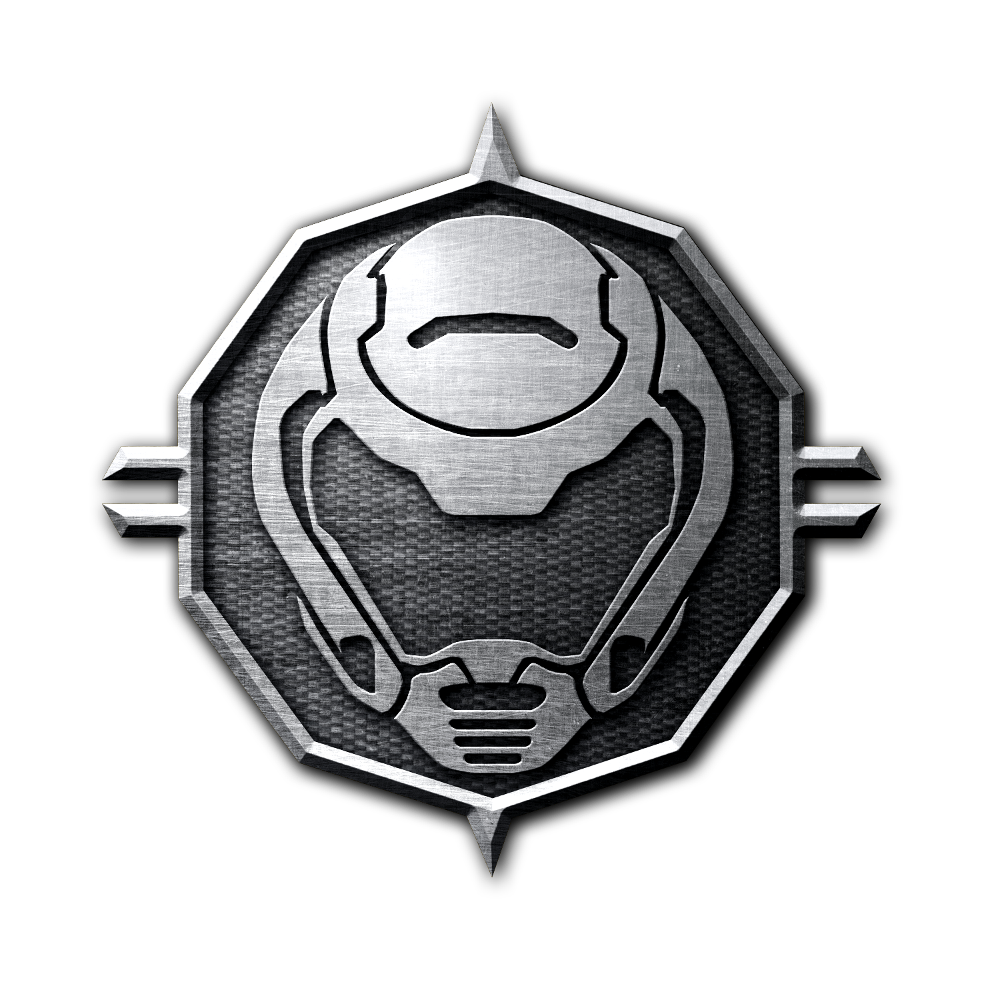

Olá, sou o Dr.Mesclafu e agora falarei um pouco sobre mim.
Meu nome real é João Victor, minha franquia favorita é Doom,
sendo o primeiro de 1993 meu jogo favorito.
Em relação a música, gosto de Rock, Heavy Metal, Blues e Country.
Tenho Xbox
há mais de cinco anos e criei minha conta da Xbox Live em 2016, sendo Halo meu exclusivo favorito. Criei meu canal em 2015
para fazer algumas gameplays de GTA.
Criei meu canal em 2015
para fazer algumas gameplays de GTA.
Depois comecei a fazer vídeos de Minecraft, nesse tempo criei inúmeros canais,
deixando de lado o principal.
Em 2018 mudei o nome do canal para Dr.Mesclafu e decidi recomeçar, consegui alguns inscritos
e comecei a fazer lives, tendo criado meu canal para compartilhar meu gosto pessoal e fazer gameplays.